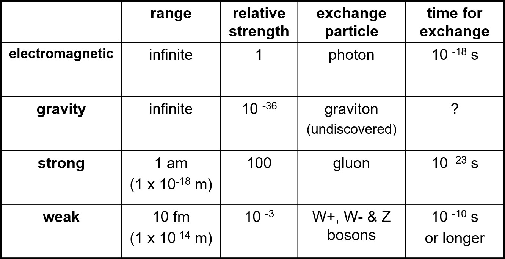

As you know the components of atoms are protons and neutrons. But like you can read in the Standard Model you can go even smaller.
Then you get to quarks. Now one can wonder why the quarks can hold together to form protons neutrons or other hadrons.
The awnser to this question is the strong nuclear force. This Force is one million times stronger than the electromagnatic force. Due to the strong force, the interaction energy of the particles is enormous. Since mass directly corresponds to energy about 99% of the mass of protons and neutrons is due to the strong nuclear force.
Unlike the strong nuclear force, the weak nuclear force is not an interaction between different quarks but an interaction between different nucleons. However, the force carrying bosons can change the kind of a quark. The weak nuclear force plays part in nuclear fission and fusion. During beta- decay a down quark inside a neutron gets changed to an up quark, which results in the neutron turning into a proton and an electron getting ejected out of the atom. The Force carriers of the weak force are W+, W- and Z0 Bosons.